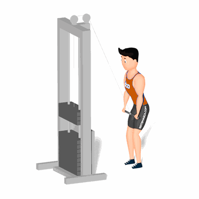

Pull Down

Exercício para a região dorsal que envolve fator, tal como, consciência corporal. Sendo assim, é importante que alguns pontos estejam bem alinhados. Indicado a praticante de nível intermediário e avançado.
Ficha Técnica
Tipo: Musculação
Grupo Muscular: Costas
Aparelho: Nenhum
Músculos: Nenhum
Como realizar
- Posicione de frente ao aparelho;
- Manter a cabeça e costas alinhas durante toda execução do exercício;
- Utilize uma barra que possibilite uma pegada em pronação, onde as mãos estejam na mesma distância dos ombros;
- Incline o tronco para frente, pés ligeiramente afastados, joelhos semiflexionados;
- Movimente a barra para baixo na linha do quadril;
- Retorne à posição inicial lentamente e repita os movimentos.
 RC STORE
RC STORE